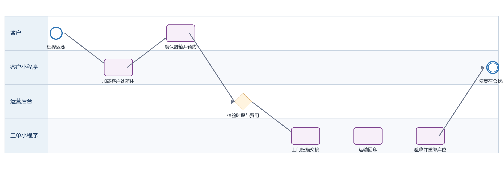

迷你箱返仓 PRD
下载 Word 文档迷你箱返仓 PRD
客户小程序研发详细需求规格 · V2.0 · 2026-09-08
定义客户取物后重新封箱、预约上门收箱、返仓运输、重新验收入库。
| 属性 | 内容 |
|---|---|
| 文档编号 | MP-BX-04 |
| 适用端 | 客户小程序、运营后台、工单小程序及领域服务 |
| 范围 | 返仓资格、箱体与封条确认、预约、费用、交接、运输、入库和库位重绑定。 |
| 不在本模块范围 | 仓内库位优化。 |
1 目标与边界
1.1 本期范围
返仓资格、箱体与封条确认、预约、费用、交接、运输、入库和库位重绑定。
1.2 不在本模块范围
仓内库位优化。
1.3 角色与系统责任
| 角色或系统 | 职责 |
|---|---|
| 客户 | 浏览、选择、签约、付款、提交申请、查询进度 |
| 客户小程序 | 采集意图并展示服务端状态，不自行决定价格、库存、资格或审批结果 |
| 运营后台 | 维护主数据、价格、库存、可操作项、审批、异常处理和人工改派 |
| 工单小程序 | 承接送取、验收、搬仓、清仓等线下任务，回传节点、附件和异常 |
| 领域服务 | 保存订单、租约、箱体、预约、支付与合同的权威状态并发布事件 |
2 BPMN 业务流程

圆形表示开始或结束事件，圆角矩形表示任务，菱形表示服务端判断。
跨端节点必须先写入领域服务，再由事件刷新客户侧时间线。
3 状态机与准入
| 状态码 | 客户文案 | 进入条件 | 下一步 |
|---|---|---|---|
| WITH_CUSTOMER | 待返仓 | 箱体在客户处 | 预约返仓 |
| RETURN_SCHEDULED | 已预约返仓 | 等待上门 | 交接 |
| RETURNING | 返仓运输中 | 箱体已扫描装车 | 到仓 |
| INSPECTING | 返仓验收中 | 核对箱况封条 | 入库或异常 |
| STORED | 已重新入仓 | 库位绑定成功 | 终态 |
| EXCEPTION | 返仓异常 | 数量/封条/损坏异常 | 人工处理 |
状态码是跨端契约，中文文案不得作为业务判断条件；写操作必须携带聚合版本并处理409冲突。
4 页面与交互
4.1 返仓预约
| 属性 | 要求 |
|---|---|
| 建议路由 | /pages/box/service?type=return |
| 入口 | 取物中的订单 |
| 页面字段 | 可返仓箱号、地址、日期、时段、封箱确认、封条号、费用、备注 |
| 主要操作 | 选择箱体、全选、提交、改期 |
| 通用状态 | 骨架屏、空态、无网络、超时、无权限、数据已变化、提交中、提交成功和提交失败分别实现 |
4.2 返仓进度
| 属性 | 要求 |
|---|---|
| 建议路由 | /pages/order/detail |
| 入口 | 提交成功 |
| 页面字段 | 预约、车次、箱号、交接、运输、验收、库位、异常 |
| 主要操作 | 查看物流、联系客服 |
| 通用状态 | 骨架屏、空态、无网络、超时、无权限、数据已变化、提交中、提交成功和提交失败分别实现 |
5 业务规则
只有WITH_CUSTOMER且未申请退租的箱体可返仓。
返仓可分批；每批生成独立预约和物流段。
客户提交前确认已封箱；现场人员必须重新扫描箱号、封条并上传交接照片。
返仓验收后允许重分配库位，但必须保留完整位置历史。
异常箱体冻结，合格箱体可先恢复在仓。
6 接口契约
| 方法 | 接口 | 用途 | 幂等要求 |
|---|---|---|---|
| GET | /box-orders/{id}/return-eligible-assets | 查询可返仓箱体 | 否 |
| POST | /box-returns/quote | 查询返仓费用和权益 | 是，requestId |
| POST | /box-returns | 创建返仓预约 | 是，clientRequestId |
| GET | /box-returns/{id} | 查询返仓进度 | 否 |
通用响应包含code、message、data、traceId和serverTime。
金额使用整数最小货币单位；写接口校验登录身份、资源归属、幂等键和聚合版本。
错误码区分参数、资格、并发、锁定、支付确认、权限和服务不可用。
7 跨端交互和数据一致性
| 方向 | 规则 |
|---|---|
| 小程序到后台 | 只调用BFF或领域服务；后台通过同一业务编号处理。 |
| 后台到小程序 | 后台写领域状态并发布事件，小程序刷新权威状态。 |
| 后台到工单小程序 | 线下任务携带workOrderId、orderId、SLA和附件要求。 |
| 工单到客户小程序 | 扫码、附件和异常先回传领域服务，再生成客户可见时间线。 |
| 消息通知 | 只携带业务编号与深链，不下发敏感合同或门禁凭证。 |
7.1 领域事件
box.return_scheduled
box.return_collected
box.return_arrived
box.return_inspected
box.restored
8 异常与恢复
| 场景 | 识别条件 | 客户侧与后台处理 |
|---|---|---|
| 箱号不一致 | 现场扫描非所选箱 | 拒绝交接并上报 |
| 封条破损 | 现场或到仓发现 | 冻结单箱并上传证据 |
| 客户未封箱 | 无法安全运输 | 允许改期，不完成交接 |
| 部分箱未交接 | 少于预约数量 | 已交箱继续履约，未交箱保持客户处 |
9 非功能与安全
列表首屏P95不超过2秒，详情P95不超过1.5秒；长流程返回受理结果和异步进度。
敏感字段最小化展示，日志脱敏，下载资产使用短时签名URL。
所有状态变更记录前后值、操作者、来源端、原因码、时间和traceId。
支持简体中文、繁体中文、英文；日期、货币和地址按香港业务规范展示。
10 埋点与指标
| 事件 | 触发 | 关键属性 |
|---|---|---|
| page_view | 进入页面 | pageCode、source、orderId、businessType |
| action_click | 点击主要操作 | actionCode、statusCode、orderVersion |
| submit_result | 写操作完成 | requestId、result、errorCode、durationMs、traceId |
| flow_step_changed | 业务节点变化 | fromStatus、toStatus、eventId、operatorType |
11 验收标准
AC-01 返仓仅展示客户处可返箱体。
AC-02 分批返仓产生独立物流记录。
AC-03 箱号和封条扫描不一致时不可完成交接。
AC-04 重新入仓保留旧库位历史。
AC-05 部分异常不阻塞合格箱体恢复在仓。
12 研发交付清单
| 角色 | 交付物 |
|---|---|
| 产品与设计 | 页面状态稿、字段字典、三语文案和验收用例 |
| 小程序前端 | 页面、组件、登录恢复、状态处理、埋点和错误恢复 |
| 后端 | OpenAPI、状态机、幂等、权限、事件、补偿和审计 |
| 运营后台 | 配置、审批、异常处理、重试和人工兜底 |
| 工单小程序 | 任务、扫码、附件、节点回传和异常上报 |
| 测试 | 端到端、并发、权限、弱网、重复事件和补偿验证 |